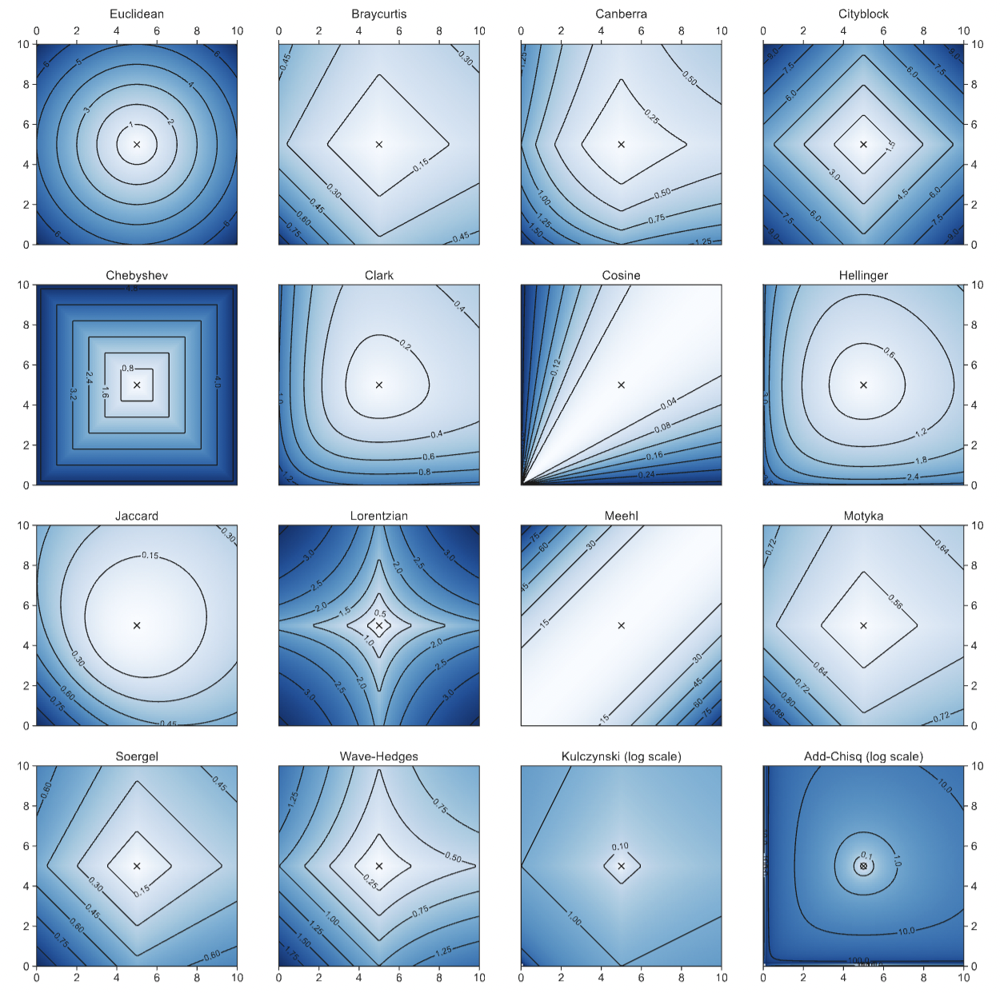

Multi-filter UV to NIR Data-driven Light curve Templates for Stripped Envelope Supernovae
Somayeh Khakpash, Federica B. Bianco, Maryam Modjaz, Willow F. Fortino,
Alexander Gagliano, Conor Larison, and Tyler A. Pritchard
While the spectroscopic classification scheme for Stripped envelope supernovae (SESNe) is clear, and14
we know that they originate from massive stars that lost some or all their envelopes of Hydrogen and15
Helium, the photometric evolution of classes within this family is not fully characterized. Photometric16
surveys, like the Vera C. Rubin Legacy Survey of Space and Time, will discover tens of thousands of17
transients each night and spectroscopic follow-up will be limited, prompting the need for photometric18
classification and inference based solely on photometry. We have generated 54 data-driven photometric19
templates for SESNe of subtypes IIb, Ib, Ic, Ic-bl, and Ibn in U/u, B, g, V, R/r, I/i, J, H, Ks, and20
Swift w2, m2, w1 bands using Gaussian Processes and a multi-survey dataset composed of all well-21
sampled open-access light curves (165 SESNe, 29531 data points) from the Open Supernova Catalog.22
We use our new templates to assess the photometric diversity of SESNe by comparing final per-band23
subtype templates with each other and with individual, unusual and prototypical SESNe. We find24
that SNe Ibn and Ic-bl exhibit a distinctly faster rise and decline compared to other subtypes. We also25
evaluate the behavior of SESNe in the PLAsTiCC and ELAsTiCC simulations of LSST light curves26
highlighting differences that can bias photometric classification models trained on the simulated light27
curves. Finally, we investigate in detail the behavior of fast-evolving SESNe (including SNe Ibn) and28
the implications of the frequently observed presence of two peaks in their light curves
Every Datapoint Counts: Stellar Flares as a Case Study of Atmosphere Aided Studies of Transients in the LSST Era
Riley W. Clarke,James R. A. Davenport, John Gizis, Melissa L. Graham, Xiaolong Li, Willow Fortino, Easton J. Honaker, Ian Sullivan, Yusra Alsayyad, James Bosch, Robert A. Knop, and Federica Bianco
Due to their short timescale, stellar flares are a challenging target for the most modern synoptic sky surveys. The upcoming Vera C. Rubin Legacy Survey of Space and Time (LSST), a project designed to collect more data than any precursor survey, is unlikely to detect flares with more than one data point in its main survey. We developed a methodology to enable LSST studies of stellar flares, with a focus on flare temperature and temperature evolution, which remain poorly constrained compared to flare morphology. By leveraging the sensitivity expected from the Rubin system, Differential Chromatic Refraction can be used to constrain flare temperature from a single-epoch detection, which will enable statistical studies of flare temperatures and constrain models of the physical processes behind flare emission using the unprecedentedly high volume of data produced by Rubin over the 10-year LSST. We model the refraction effect as a function of the atmospheric column density, photometric filter, and temperature of the flare, and show that flare temperatures at or above $\sim$4,000$K$ can be constrained by a single $g$-band observation at airmass $X\gtrsim1.2$, given the minimum specified requirement on single-visit relative astrometric accuracy of LSST, and that a surprisingly large number of LSST observations is in fact likely be conducted at $X\gtrsim1.2$, in spite of image quality requirements pushing the survey to preferentially low $X$. Having failed to measure flare DCR in LSST precursor surveys, we make recommendations on survey design and data products that enable these studies in LSST and other future surveys.

Light Curve Classification with DistClassiPy: a new distance-based classifier
Chaini, Siddharth ; Mahabal, Ashish ; Kembhavi, Ajit ; Bianco, Federica B.Bianco
The rise of synoptic sky surveys has ushered in an era of big data in time-domain astronomy, making data science and machine learning essential tools for studying celestial objects. Tree-based (e.g. Random Forests) and deep learning models represent the current standard in the field. We explore the use of different distance metrics to aid in the classification of objects. For this, we developed a new distance metric based classifier called DistClassiPy. The direct use of distance metrics is an approach that has not been explored in time-domain astronomy, but distance-based methods can aid in increasing the interpretability of the classification result and decrease the computational costs. In particular, we classify light curves of variable stars by comparing the distances between objects of different classes. Using 18 distance metrics applied to a catalog of 6,000 variable stars in 10 classes, we demonstrate classification and dimensionality reduction. We show that this classifier meets state-of-the-art performance but has lower computational requirements and improved interpretability. We have made DistClassiPy open-source and accessible at https://pypi.org/project/distclassipy/ with the goal of broadening its applications to other classification scenarios within and beyond astronomy..
Rubin Observatory LSST Transients and Variable Stars Roadmap
Hambleton, Kelly M.; Bianco, Federica B. ; Street, Rachel ; et al.
The Vera C. Rubin Legacy Survey of Space and Time (LSST) holds the potential to revolutionize time domain astrophysics, reaching completely unexplored areas of the Universe and mapping variability time scales from minutes to a decade. To prepare to maximize the potential of the Rubin LSST data for the exploration of the transient and variable Universe, one of the four pillars of Rubin LSST science, the Transient and Variable Stars Science Collaboration, one of the eight Rubin LSST Science Collaborations, has identified research areas of interest and requirements, and paths to enable them. While our roadmap is ever-evolving, this document represents a snapshot of our plans and preparatory work in the final years and months leading up to the survey's first light.
What's the Difference? The Potential for Convolutional Neural Networks for Transient Detection without Template Subtraction
Acero-Cuellar, Tatiana ; Bianco, Federica ; Dobler, Gregory ; Sako, Masao ; Qu, Helen ; LSST Dark Energy Science Collaboration
We present a study of the potential for convolutional neural networks (CNNs) to enable separation of astrophysical transients from image artifacts, a task known as "real-bogus" classification, without requiring a template-subtracted (or difference) image, which requires a computationally expensive process to generate, involving image matching on small spatial scales in large volumes of data. Using data from the Dark Energy Survey, we explore the use of CNNs to (1) automate the real-bogus classification and (2) reduce the computational costs of transient discovery. We compare the efficiency of two CNNs with similar architectures, one that uses "image triplets" (templates, search, and difference image) and one that takes as input the template and search only. We measure the decrease in efficiency associated with the loss of information in input, finding that the testing accuracy is reduced from ~96% to ~91.1%. We further investigate how the latter model learns the required information from the template and search by exploring the saliency maps. Our work (1) confirms that CNNs are excellent models for real-bogus classification that rely exclusively on the imaging data and require no feature engineering task and (2) demonstrates that high-accuracy (>90%) models can be built without the need to construct difference images, but some accuracy is lost. Because, once trained, neural networks can generate predictions at minimal computational costs, we argue that future implementations of this methodology could dramatically reduce the computational costs in the detection of transients in synoptic surveys like Rubin Observatory's Legacy Survey of Space and Time by bypassing the difference image analysis entirely.
Toward the Automated Detection of Light Echoes in Synoptic Surveys: Considerations on the Application of Deep Convolutional Neural Networks
Li, Xiaolong ; Bianco, Federica B. ; Dobler, Gregory ; Partoush, Roee ; Rest, Armin ; Acero-Cuellar, Tatiana ; Clarke, Riley ; Fortino, Willow Fox ; Khakpash, Somayeh ; Lian, Ming
Light echoes (LEs) are the reflections of astrophysical transients off of interstellar dust. They are fascinating astronomical phenomena that enable studies of the scattering dust as well as of the original transients. LEs, however, are rare and extremely difficult to detect as they appear as faint, diffuse, time-evolving features. The detection of LEs still largely relies on human inspection of images, a method unfeasible in the era of large synoptic surveys. The Vera C. Rubin Observatory Legacy Survey of Space and Time (LSST) will generate an unprecedented amount of astronomical imaging data at high spatial resolution, exquisite image quality, and over tens of thousands of square degrees of sky: an ideal survey for LEs. However, the Rubin data processing pipelines are optimized for the detection of point sources and will entirely miss LEs. Over the past several years, artificial intelligence (AI) object-detection frameworks have achieved and surpassed real-time, human-level performance. In this work, we leverage a data set from the Asteroid Terrestrial-impact Last Alert System telescope to test a popular AI object-detection framework, You Only Look Once, or YOLO, developed by the computer-vision community, to demonstrate the potential of AI for the detection of LEs in astronomical images. We find that an AI framework can reach human-level performance even with a size- and quality-limited data set. We explore and highlight challenges, including class imbalance and label incompleteness, and road map the work required to build an end-to-end pipeline for the automated detection and study of LEs in high-throughput astronomical surveys.
Preparing to Discover the Unknown with Rubin LSST: Time Domain
Li, Xiaolong ; Ragosta, Fabio ; Clarkson, William I. ; Bianco, Federica B.
Perhaps the most exciting promise of the Rubin Observatory Legacy Survey of Space and Time (LSST) is its capability to discover phenomena never before seen or predicted: true astrophysical novelties; but the ability of LSST to make these discoveries will depend on the survey strategy. Evaluating candidate strategies for true novelties is a challenge both practically and conceptually. Unlike traditional astrophysical tracers like supernovae or exoplanets, for anomalous objects, the template signal is by definition unknown. We approach this problem by assessing survey completeness in a phase space defined by object color and flux (and their evolution), and considering the volume explored by integrating metrics within this space with the observation depth, survey footprint, and stellar density. With these metrics, we explore recent simulations of the Rubin LSST observing strategy across the entire observed spatial footprint and in specific Local Volume regions: the Galactic Plane and Magellanic Clouds. Under our metrics, observing strategies with greater diversity of exposures and time gaps tend to be more sensitive to genuinely new transients, particularly over time-gap ranges left relatively unexplored by previous surveys. To assist the community, we have made all of the tools developed publicly available. While here we focus on transients, an extension of the scheme to include proper motions and the detection of associations or populations of interest will be communicated in Paper II of this series. This paper was written with the support of the Vera C. Rubin LSST Transients and Variable Stars and Stars, Milky Way, Local Volume Science Collaborations.
Optimization of the Observing Cadence for the Rubin Observatory Legacy Survey of Space and Time: A Pioneering Process of Community-focused Experimental Design
Bianco, Federica B. et al. ; ...
Vera C. Rubin Observatory is a ground-based astronomical facility under construction, a joint project of the National Science Foundation and the U.S. Department of Energy, designed to conduct a multipurpose 10 yr optical survey of the Southern Hemisphere sky: the Legacy Survey of Space and Time. Significant flexibility in survey strategy remains within the constraints imposed by the core science goals of probing dark energy and dark matter, cataloging the solar system, exploring the transient optical sky, and mapping the Milky Way. The survey's massive data throughput will be transformational for many other astrophysics domains and Rubin's data access policy sets the stage for a huge community of potential users. To ensure that the survey science potential is maximized while serving as broad a community as possible, Rubin Observatory has involved the scientific community at large in the process of setting and refining the details of the observing strategy. The motivation, history, and decision-making process of this strategy optimization are detailed in this paper, giving context to the science-driven proposals and recommendations for the survey strategy included in this Focus Issue.